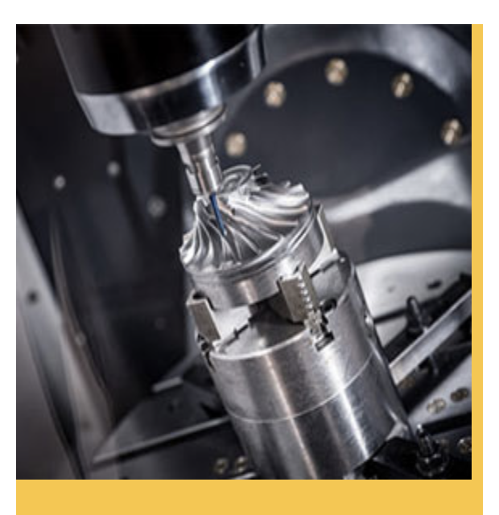

防水连接器和工业连接器的研发
2019-10-24
由于连接器的结构日益多样化，新的结构和应用领域不断出现，试图用一种固定的模式来解决分类和命名问题，已显得难以适应。尽管如此，一些基本的分类仍然是有效的。
1．互连的层次
根据电子设备内外连接的功能，互连（interconnection）可分为五个层次。
① 芯片封装的内部连接
② IC封装引脚与PCB的连接。典型连接器IC插座。
③ 印制电路与导线或印制板的连接。典型连接器为印制电路连接器。
④ 底板与底板的连接。典型连接器为机柜式连接器。
⑤ 设备与设备之间的连接。典型产品为圆形连接器。
第③和④层次有某些重叠。在五个层次的连接器中，市场额是第③和第⑤层次的产品，而目前增长最快的是第③层次的产品。

2．连接器规格的层次。
按照国际电工委员会（IEC）的分类，连接器属于电子设备用机电元件，其规格层次为：
门类（family）例：连接器
分门类（sub-family）例：圆形连接器
类型（type）例：YB型圆形连接器
品种（style）例：YB3470
规格（variant）
3．连接器在我国的定义。
在我国的行业管理中，把连接器与开关、键盘等统称为电接插元件，而电接插元件与继电器则统称机电组件。
上一篇：连接器的产品类别